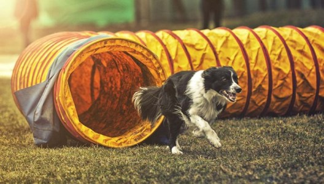

Kas gi yra Agility sportas?
Tai šunų sporto šaka, kilusi iš žirginio sporto Anglijoje. Pirmą kartą parodomąją Agility programą žiūrovai galėjo išvysti 1977 m. Cruft’o šunų parodos metu ir jau tada Agility sulaukė didelio žiūrovų susidomėjimo ir susižavėjimo. Vienas iš Agility sporto pradininkų, britas Peter Lewis sakė: “Agility yra puikiausias šunų sporto pasaulio atradimas. Tai ne toks sportas, kur dalyviai nesišypso ir nesijuokia, o žiūrovai turi stebėti varžybas tyliai ir įsitempę. Čia nėra teisėjų niūriomis veido išraiškomis. Esu įsitikinęs, kad kai ši sporto šaka švęs 20-ąjį gimtadienį, ji jau bus paplitusi visame pasaulyje”. Taip ir yra, šiandien Agility yra vienas populiariausių kinologinių sportų pasaulyje, pritraukiantis į varžybas kasmet vis daugiau mėgėjų ir profesionalų. Agility gali sportuoti bet kokio amžiaus, veislės ir dydžio šunys – svarbiausia, kad augintinis būtų sveikas ir neturėtų polinkio sirgti įvairiomis sąnarių bei širdies ligomis. Varžybų metu šuo turi įveikti iš įvairių kliūčių sudarytą trasą be klaidų ir kuo greičiau – kad tai pavyktų, laukia ilgas ir smagus darbas treniruotėse. Visada savo sportininkus mokome, kad Agility trasa – tai ne tik kliūtys, daug svarbiau yra tai, kas tarp kliūčių: šuns pasitikėjimas vedliu, koncentracija ir tobulas abipusis supratimas.
